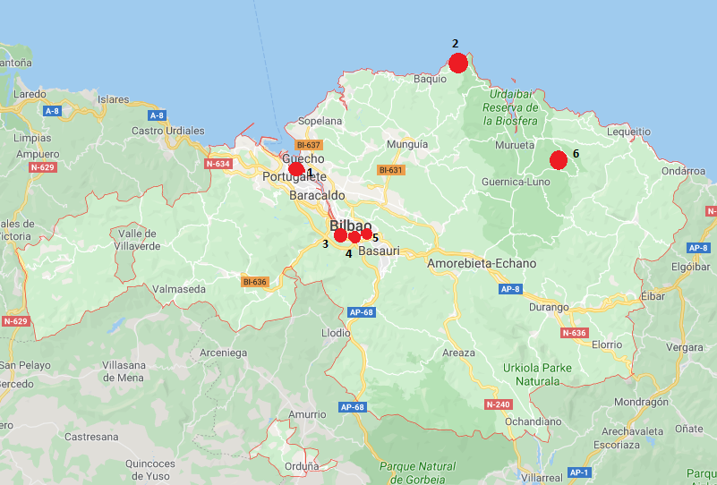

Bienvenidos a Turismo Bizkaia. En esta web podrás encontrar diferentes puntos digno de visita en la comunidad de Bizkaia. En este mapa están reflejados los puntos de interés de esta página. Para ver información sobre ellos, pincha en el punto rojo del mapa o selecciónalo en el menú desplegable del lateral. En dicho menú tambien podemos encontrar un formulario en el que puedes dar tu opinión, algunas páginas en las que encontrarás información sobre turismo en Araba y Gipuzkoa, y una pestaña de contacto en la que encontrarás información sobre nosotros.
San Juan de Gaztelugatxe:
San Juan de Gaztelugatxe en Bermeo es uno de esos lugares mágicos de visita obligada. Ubicado en el Golfo de Vizcaya, Bilbao en el País Vasco, España. Donde Reyes y Reinas, guerreros, personajes fantásticos en reinos imaginarios, son protagonistas junto con los dragones que reinaban en el cielo. Todo esto hace que el espectador, imagine otros tiempos y otros mundos llenos de aventuras en escenarios inimaginables.
Casco Viejo:
Cuando se fundó la Villa de Bilbao hace más de 700 años, sus habitantes vivían del regadío y la pesca, y la Ría empezaba ya a conformarse como la mejor vía de comunicación con el exterior. Había en aquel entonces dos núcleos de población de distinto carácter: por un lado, la margen izquierda o Bilbao la Vieja, que era una zona minera donde se trabajaba el hierro en las ferrerías. Y por otro, la población de la margen derecha, llamada Casco Viejo, dedicada al tráfico mercantil y portuario.
Bosque de Oma:
El bosque de Oma (en euskera: Omako basoa) es una obra artística creada por el escultor y pintor Agustín Ibarrola entre los años 1982 y 1985​ y que se puede encuadrar dentro de la tendencia contemporánea del Land Art. Dicho bosque está situado en la Reserva de la Biosfera de Urdaibai,1​ y consiste en un grupo de árboles en los que se han realizado pintadas
Museo Guggenheim:
El Museo Guggenheim Bilbao es obra del arquitecto canadiense-americano Frank Gehry y representa un magnífico ejemplo de la arquitectura más vanguardista del siglo XX. Con 24.000 m2 de superficie, de los que 11.000 están destinados a espacio expositivo, el edificio representa un hito arquitectónico por su audaz configuración y su diseño innovador, conformando un seductor telón de fondo para el arte que en él se exhibe.
Puente de Bizkaia:
El puente de Vizcaya (Bizkaiko Zubia en euskera), también conocido como Puente Bizkaia, Puente Colgante, Puente Colgante de Portugalete, o Puente Colgante de Las Arenas o puente Palacio, es un puente transbordador de peaje, concebido, diseñado y construido por iniciativa privada entre 1887 y 1893, que une las dos márgenes de la ría de Bilbao en Vizcaya (España). Fue inaugurado el 28 de julio de 1893, siendo el primero de su tipología en el mundo3 y uno de ocho que aún se conservan
San Mamés:
San Mamés es un estadio de fútbol ubicado en Bilbao (Vizcaya, España). Fue inaugurado el 16 de septiembre de 2013 y es el sucesor del antiguo San Mamés. Es utilizado principalmente por el Athletic Club para la práctica del fútbol, si bien tiene otros usos complementarios en los que se incluye un centro de innovación deportiva y otro de medicina deportiva, una pista de atletismo subterránea y un polideportivo municipal. Además, será utilizado como recinto para conciertos de gran envergadura. El campo tiene una capacidad de 53 289 localidades y cuenta con el rango de estadio de Categoría 4, el máximo otorgado por la UEFA, por lo que puede ser sede de la Eurocopa y albergar finales de la Liga Europa; no así de la Liga de Campeones, ya que ésta requiere un aforo mayor.
MENÚ
-
Página principal
-
Lugares de interés
-
Danos tu opinión
-
Otras páginas web:
-
Contacto
-
VOLVER